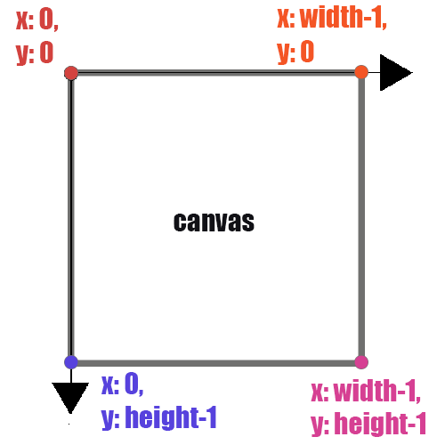

Coordinates System
Definition
In danceOn, all shapes drawn to the screen have a position that is specified as a coordinate. All coordinates are measured as the distance from the origin in units of pixels. The coordinates are represented as x and y in danceOn. x represents where the object is on the horizontal axis, and y represents where the object is on the vertical axis. At the origin, being the upper left of the window, both the coordinate x and coordinate y are 0. At the lower right of the window, x is width, and y is height.
As a result, the coordinates system in dance on could be understand as Figure 1.

This x and y expression are universal in the languages for danceOn. It is common to find x and y used to express things related to the coordinates systems.
When you see x and y at the begining of a line where they appears by themselves such as “x:” or “y:”, it means you are defining the location of the object you are currently programming.
However, the x and y are also used to express some pre-defined location variables for poses. For instance, you may see the name for poses are called something like “pose.nose.x” or “pose.leftWrist.y”. When the x and y appears as a suffix after body parts names, they are used to express the specific numbers of coordinates of the body parts at different times.
Why would you also use x and y for “pose.nose.x” and “pose.leftWrist.y” instead of numbers?
Observer the location of the poses keypoints (nose,leftWrist, leftEye, etc) on your danceOn canvas, you may easily find out that the locations of the key points changes throughout the progression of your videos/webcame recordings. Becasue we are dealing with numbers that are constantly changing when refering to coordinates of the pose keypoints, it is easier to represent the location with variables(names for changing numbers).
Having x and y as the names indicates that they are in the same coordinates system with your object – “x:” or “y:”.
Examples
Manipulate the two numbers for x and y and observe
Practices
Follow the instructions and develop on them in your own danceOn interfaces. For this practice, you can use either the original pre-recorded video or your own webcam.
Practice 1
Copy the code cell into your danceOn code editor (you may use the copy button on the top right corner). Currently, there should be a red circle on the top left corner of the code cell.
Do the following adjustments to only the numbers after x: and y:. See how the red circles changed on the canvas.
- Increase/decrease the numbers. Observe and think of the below questions
- In which direction does x get bigger?
- In which direction does y get bigger?
(pose) => [
{
what: 'circle',
when: true,
where: {
x: 0,
y: 0
},
how:{
d:150,
fill:'red'
}
},
];Practice 2
- Change the numbers to body poses based on the references tab for poses’ all keypoints
- e.g. copy this chunk and replace it to the where brackets, change the pose.nose.x to different things
- What does the x in pose.nose.x and y in pose.nose.y mean?
where: {
x: pose.nose.x,
y: pose.nose.y
},Challenge Questions
Copy the code cell into your danceOn code editor. Perferably turn on your webcam for this exercise. Play with the code to describe what the code is doing in sentences like: “The circle moves to the right when my nose goes up/down/left/right.”
Feel free to play with the code to create more complicated interaction between the body and the shape.
tip: Pay attention to the things that goes after the “x:” and “y:” !
(pose) => [
{
what: 'circle', //this is where the circle got drawn
when: true,
where: {
x: pose.nose.y,
y: pose.nose.x
},
how:{
d:150,
fill:'red'
}
},
];Flashcards
Go through the flashcards to review some of the concepts of the coordinates system.